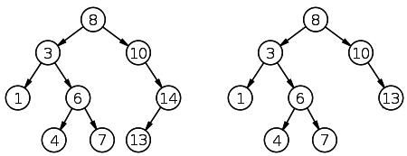

二叉树¶
二叉树的性质：
- 若任意节点的左子树不空，则左子树上所有结点的值均小于它的根结点的值；
- 任意节点的右子树不空，则右子树上所有结点的值均大于它的根结点的值；
- 任意节点的左、右子树也分别为二叉树。
- 没有键值相等的节点（no duplicate nodes）。
二叉查找树相比于其他数据结构的优势在于查找、插入的时间复杂度较低。二叉查找树是基础性数据结构，用于构建更为抽象的数据结构，如集合、multiset、关联数组等。

class Node:
"""
二叉树左右枝
"""
def __init__(self, data):
"""
节点结构
"""
self.left = None
self.right = None
self.data = data
def insert(self, data):
"""
插入节点数据
"""
if data < self.data:
if self.left is None:
self.left = Node(data)
else:
self.left.insert(data)
elif data > self.data:
if self.right is None:
self.right = Node(data)
else:
self.right.insert(data)
def lookup(self, data, parent=None):
"""
二叉树查找
"""
if data < self.data:
if self.left is None:
return None, None
return self.left.lookup(data, self)
elif data > self.data:
if self.right is None:
return None, None
return self.right.lookup(data, self)
else:
return self, parent
def children_count(self):
"""
子节点个数
"""
cnt = 0
if self.left:
cnt += 1
if self.right:
cnt += 1
return cnt
def delete(self, data):
"""
删除节点
"""
node, parent = self.lookup(data) #已有节点
if node is not None:
children_count = node.children_count() #判断子节点数
if children_count == 0:
# 如果该节点下没有子节点，即可删除
if parent.left is node:
parent.left = None
else:
parent.right = None
del node
elif children_count == 1:
# 如果有一个子节点，则让子节点上移替换该节点（该节点消失）
if node.left:
n = node.left
else:
n = node.right
if parent:
if parent.left is node:
parent.left = n
else:
parent.right = n
del node
else:
# 如果有两个子节点，则要判断节点下所有叶子
parent = node
successor = node.right
while successor.left:
parent = successor
successor = successor.left
node.data = successor.data
if parent.left == successor:
parent.left = successor.right
else:
parent.right = successor.right
def compare_trees(self, node):
"""
比较两棵树，比较两个二叉树的方法中，只要有一个节点（叶子）与另外一个树的不同，就返回 False，也包括缺少对应叶子的情况。
"""
if node is None:
return False
if self.data != node.data:
return False
res = True
if self.left is None:
if node.left:
return False
else:
res = self.left.compare_trees(node.left)
if res is False:
return False
if self.right is None:
if node.right:
return False
else:
res = self.right.compare_trees(node.right)
return res
#前序（pre-order，NLR）
def preorder(node):
if node is not None:
print(node.data)
preorder(node.left)
preorder(node.right)
#中序（in-order，LNR）
def inorder(node):
if node is not None:
inorder(node.left)
print(node.data)
inorder(node.right)
#后序（post-order，LRN）
def postorder(node):
if node is not None:
postorder(node.left)
postorder(node.right)
print(node.data)
#层序（level-order）
def levelorder(node, more=None):
if node is not None:
if more is None:
more = []
more += [node.left, node.right]
print node.data,
if more:
levelorder(more[0], more[1:])
二叉树删除节点示例¶
得到要删除节点下的子节点数目后，需要进行三种情况的判断
- 如果没有子节点，直接删除
- 如果有一个子节点，要将下一个子节点上移到当前节点，即替换之
- 如果有两个子节点，要对自己点的数据进行判断，并从新安排节点排序
root.delete(1)

root.delete(14)
root.delete(3)